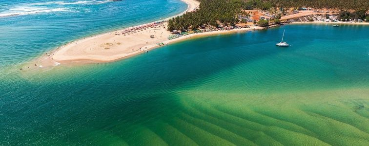

Conheça algumas praias:
Praia de Antunes
- Duração recomendada: 2-3 horas
- Restaurantes por perto: 29 dentro de 5 km
- Al, Maragogi, Alagoas 57955-000
Praia de Ipioca
- Duração recomendada: 2-3 horas
- Restaurantes por perto: 1.267 dentro de 5 km
- Rua Antônio Sabino de Sá 251, Maceió, Alagoas 57039-705
Praia de São Miguel dos Milagres
- Duração recomendada: 2-3 horas
- Restaurantes por perto: 70 dentro de 5 km
- R. Pref. Augusto de Barros Falcao, 346, São Miguel dos Milagres, AL 57940-000
Praia do Francês
- Duração recomendada: 2-3 horas
- Restaurantes por perto: 100 dentro de 5 km
- Av. Caravelas Praia do Francês, Maceió, Alagoas 57160-000
Praia de Barra Grande
- Duração recomendada: 2-3 horas
- Restaurantes por perto: 22 dentro de 5 km
- Barra Grande, Maragogi - AL, 57955-000

Praia do Gunga
- Duração recomendada: 2-3 horas
- Restaurantes por pertp: 47 dentro de 5 km
- AL-101, Roteiro, Alagoas 57257-000